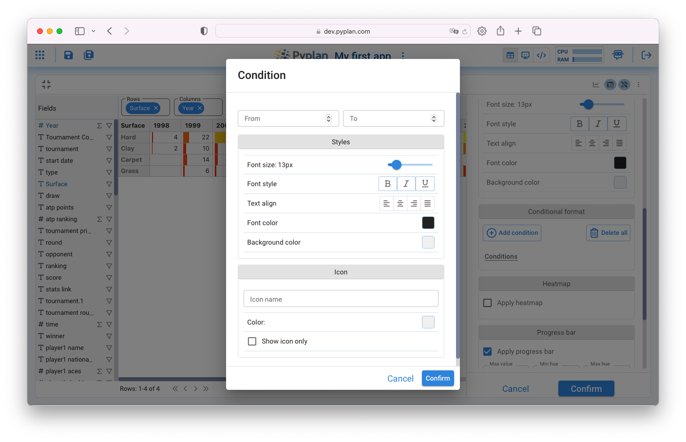
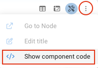

Analysis and Visualization
Contents
Analysis and Visualization#
Pyplan is a No-code / Low-code platform designed for users with no programming knowledge, so it allows many data manipulation and processing tasks without coding.
One of Pyplan’s objectives is to provide transparency to the calculation logic, allowing not only to navigate through the calculation process to conceptually understand its flow, but also to select to execute and visualize the results of each step. This visualization can be in the form of a table or a graph.
When navigating the influence diagram you can select any node, execute it and visualize its result.
Display in Table format#
By clicking on the green node with the title “Data” we will see the following:

To run the node, click on the evaluation icon indicated in (1) in the graph. After the node is executed, a table will appear as shown in the following screenshot:
Maximizing the display window (1) and then clicking on (2) we access the fields of this data table:

Where we can see each field and measure of the Table, the type of field (Numeric # or Text T), and the grouping function that will be executed if necessary (Sum, Max, Min, Average or Count).
By dragging the “Years” field to the columns box and after defining the Average as the aggregation function of the “atp ranking” field, drag it to the “Measures” box, we will obtain a table as shown in the following image:
This table describes the evolution over time of the average annual ranking of “Roger Federer”. Any field can be displayed as a Column or Row causing the grouping of the corresponding displayed measures.
Table Format#
Clicking on (3) displays the data table formatting alternatives. They are grouped into: General, Data, Styles, Index sync.

The reader can investigate the configuration options grouped under General and Data on their own.
The Styles section groups table style configurations with a particular behavior that provides flexibility and consists of the following:
A first section headed by “Apply to” indicates the target of the configuration set below. By default this target is “All” which means that whatever is set below will apply to the entire table. In this particular case we could set with the integer format to the whole table.
In the same way we could establish a particular format for a specific condition of some dimension. In this case, for example, define with green background the results that correspond to the “Grass” surface.

By defining the corresponding style we will achieve the result shown in the following image:
Conditional format#
It is possible to establish formats based on particular conditions of the table values. To do so, the conditions and formatting must be added as shown in the following image:
Two particular cases of conditional formatting that come predefined within Pyplan are the Heatmap and the Progress Bar.
Heatmap#
The option to format the table with a heatmap appears by scrolling down among the style options.

Progress Bar#
The table display with a Progress Bar format can be configured as shown in the figure below:

Visualization in Graph format#
Clicking on the icon shown in figure (1) switches the view from table to chart. Whenever the selected chart type allows it, Pyplan automatically assigns fields from the table to the chart.
Visualization Configuration#
There are multiple types of graphs that can be configured as alternatives for data visualization as shown in the following figure. Each type of chart has its sub-types and depending on this choice, the properties that must be indicated to allow the construction of the chart are defined.

Once the chart type has been chosen, its properties are grouped in the following sections:
Coding Visualizations#
Pyplan allows through the user interface the configuration of the most frequently used parameters of each type of chart. However, there are many other chart properties that can be defined from the code of each display element.
Para acceder a personalizar el código de visualización se debe hacer click sobre el icono y luego elegir Show component code
Once this is done, and after moving the Code switch from Default to Custom, we can start modifying the behavior code of the graphical display.

A complete guide to the configurable properties of each plot can be found here: Plotly Express in Python